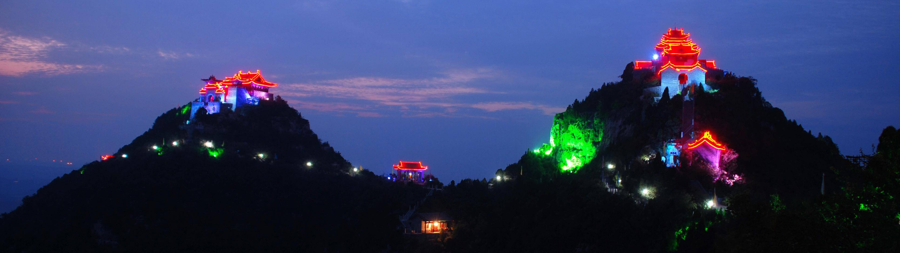

珏山
珏山风景区又名角山，位于晋城市区东南13公里处的丹河南岸。主峰海拔973米，珏山风景素以险峻、雄奇驰名，古有“晋魏河山第一奇”之美称，“珏山吐月”为晋城四大名胜之一。佛道名山，传齐隋泰斗慧远大和尚在此始建青莲寺，密、禅、净土，各宗皆精，名僧辈出，时称佛都。现存宋建唐塑，列为国宝；道观飞峙峰头，林木葱葱，山岚缭缭，寻天门而上，恍若仙游，素誉北国武当。2009年10月珏山景区入选中国百佳避暑名山。
珏山风景区,属于太行山脉.位于晋城市区的东南,面积10平方公里,主峰海拔913米,珏山原名角山.因为它的山体像三角形,所以称为角山.近几年珏山的珏字由一个王字和一个玉字组成,王代表贵族,玉代表富豪,因此,我们珏山荣华富贵,还有一种说法是:珏山的两个王字代表着两座大山.而那一点,则代表着圆圆的月亮,是团团圆圆,和和美美,甜甜蜜蜜的意思。今天,我们所有的游客来到珏山,沾染了珏山的灵气,就都是大富大贵之人了。在两宋时期就已经是道教名山,它与武当山有着异曲同工只处,武当山是真武帝君的修炼场所,而珏山则是其镇守场所.珏山的六绝,四美,二奇.更让人叹为观止.双峰之峭,吐月之妙,红叶之美,峡谷之幽,大桥之雄称为珏山的”六奇”,珏山的四季景色各不相同,春到珏山鸟语花香,夏到珏山避暑山庄,秋到珏山红叶尽然,冬到珏山银装素裹,称为珏山的四美”龟山的惟妙惟肖之奇,珏山吐月之奇则称为珏山的二奇.